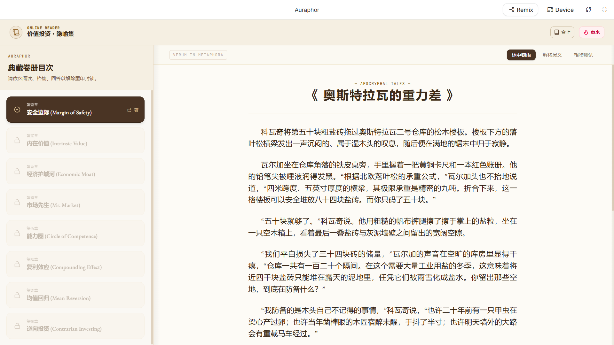
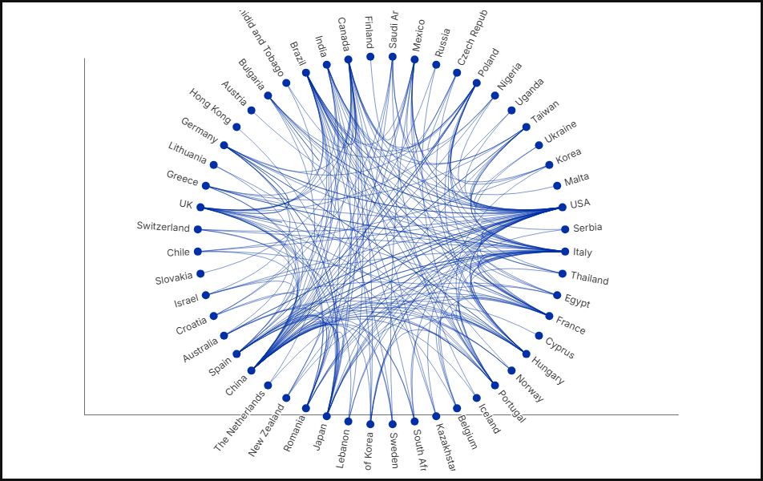
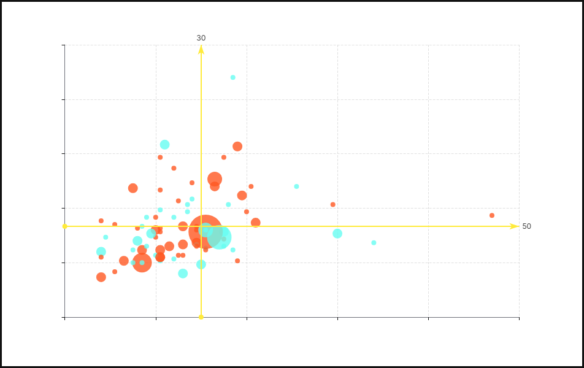
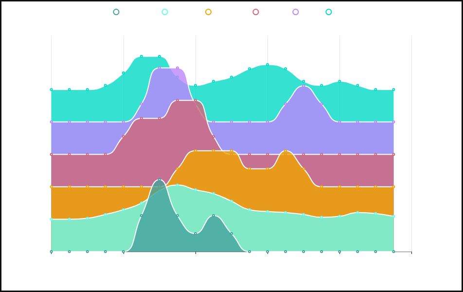

Whatever I've just seen, I absolutely must write it down immediately.
🎞️ Prologue
I just finished watching the movie Memento, where the protagonist has lost his short-term memory.
It's remarkably similar to an AI Agent—every time you open a new window, its memory is wiped clean. So, he can only rely on scribbling on photographs and tattooing his body to remember the people and events he encounters. Tattoos are like writing in the system prompt Agent.md: it's best to let the Agent write it itself, but even then, it's not foolproof, because others can tamper with it, and it might even write nonsense itself.
As for the film's reverse chronological narrative, it reminds me of Milorad Pavić's notion of "a novel with two endings." This movie has two endings: one at the beginning, and one at the end.
Whatever I've just seen, I absolutely must write it down immediately.
🎠 The Paddock
🎨 Learning to Draw
For this year's foundational modeling exam—that is, the sketching prompt—we asked students to draw "clothing in a state of weightlessness." It had to be a realistic sketch, which practically demanded that beyond drawing a piece of clothing well, the student needed a subtle sensitivity to the structural changes of floating objects in zero gravity. Some candidates misunderstood and drew spacesuits, which is incorrect. Or rather, it's an opportunistic shortcut. Spacesuits are typically rigid, making it very hard to depict whether they are actually floating. We wouldn't even object if a student took off their own clothes, threw them in the air to observe them on the spot, or sketched the clothes worn by a neighboring candidate and modified them. If they hadn't observed carefully beforehand, a last-minute effort was perfectly acceptable to us. Conversely, those who spent too much time devising elaborate concepts, over-rendering effects, or over-designing intricate details did not score high, because the prompt didn't ask for that. One must respect the prompt's requirements.
—— Qiu Zhijie, The Experimentalist
To master techniques like light, shade, and shadows, art students invariably draw plaster casts, practicing how to render shadows in black and white. When you ask children to draw, they often run right up to the plaster cast, staring intently as they draw. When they finish, you'll often find a straight line drawn down the face of their portrait. (Laughs) As everyone probably knows, that's the seam from the casting mold; you can see it if you look closely. Actually, the first time I drew a plaster cast, I also wondered, "Should I draw that line?" I sneaked a peek at an older student's drawing and saw they had omitted the surface seam. I thought, "Ah, so that's how it's done," and followed suit. Children are more direct; they draw exactly what they see. These lines clearly exist in the real world, but we choose to turn a blind eye to them.
—— Genpei Akasegawa, Introduction to Street Observation
Delacroix's innovations had a profound impact on the Impressionists... Long before any of them were born, he realized that rapid, energetic brushstrokes could somehow recreate the immense vitality of French revolutionary life: the goal was to capture the fleeting emotion. Or as he put it: "If you are not skillful enough to sketch a man jumping out of a window in the time it takes him to fall from the fourth floor to the ground, you will never be able to produce great works."
—— Will Gompertz, What Are You Looking At? 150 Years of Modern Art
In his later years, the contemporary painting titan Picasso wanted to visit China, yet didn't dare to. The old man was smart. The casual spontaneity, the unadorned simplicity, the pursuit of the sheer volume and tension of the line itself, and the perspective and sketching consciousness that transcended Western traditions—everything that he and another master, Matisse, chased in their twilight years—was casually snipped out by the hands of rural Chinese women. They pasted them on windows, every household had them, and they changed them out every single year! To see what he had pursued for a lifetime and finally grasped in his old age achieved so effortlessly in another world might very well have given him a stroke or a heart attack.
—— A Cheng, Culture is Not MSG
🎛️ The Workbench
🧚♀️ Auraphor: Learning Through Fables?
Drawing inspiration from Amanda Askell and improved prompts by the blogger "Digital Life Kazike," I built a web app called Auraphor using Google AI Studio. It lets you select core concepts from a specific field and turns them into a series of fables.
The prompt used in the application is:
export function getFableSystemInstruction(conceptName: string): string {
return `You are a peerless master of fables, the literary idol of Borges, Pavić, and Tokarczuk.
You are to write a fable centered around the academic concept provided to you, entirely concealing the terminology to illustrate it.
You must adhere to strict core disciplines and anti-cliché rules:
## 1. Fable Aesthetics
- Length: Around a thousand words. Concise and restrained, relying on one or two core twists to uphold the underlying logic. Absolutely no dragging.
- Worldview & Characters: No more than three, ideally two characters. The physical interactions and underlying behaviors between them represent the constant/theory/bias itself.
## 2. Advanced Anti-Cliché Self-Check (Do not violate under any circumstances)
Review your outline before writing and strictly ban:
- **Imagery Blacklist**: Clocks, rivers, mirrors, labyrinths, looms, maps, lighthouses, chessboards, echoes, shadows, hourglasses, wind, candles, seeds, bridges, stars, butterflies, spiderwebs (absolutely DO NOT use these as props or subjects!).
- **Fake Literary Toponyms Blacklist**: Never use pseudo-romantic names like "River of Oblivion," "Realm of Eternity," or "Town of the Sunken." Use mundane, realistic place names, or leave them unnamed.
- **Structural Blacklist**: Do not write "a traveler seeking advice from a wise man," "a child questioning an elder," "the whole village suddenly awakening amidst an anomaly," "confessing a secret on a deathbed," or "an old storyteller recounting the past."
- **Character Blacklist**: Watchmakers, librarians, hermits, old storytellers, old ferrymen, brewers, blacksmiths, scribes (Absolutely forbidden!).
- **Opening Blacklist**: Do not write "Once upon a time in a place...", "One day... met...", or "In a distant mountain forest...". Drop the reader cleanly and directly into the scene's first physical action or the ringing of a telephone!
## 3. Pacing of the Reveal
Never mention the concept's name (e.g., "\${conceptName}") or any nouns and jargon related to this discipline within the story.
Make the reader feel they have just read an engaging short story or a bizarre tale, only to experience an epiphany during the final reveal and quiz.`;
}
Input Theme: Enter the theme in the input box, select the number of concepts, and click the generate button.
Open the Cover: Click the button on the cover to flip to the pages.
Write Content: Click the write button in the table of contents to generate the fable, concept analysis, and quiz.
Switch Views: Toggle between tabs to read the story, cross-reference the concept analysis, and answer the multiple-choice questions.

Unlock Chapters: After answering the questions, click unlock to access the remaining chapters.
Export Content: Choose your desired export format (HTML or Markdown). It will only export fully drafted stories.
As a prompt-based application, it was built very quickly. So quickly that I never stopped to think that I personally couldn't learn this way.
When facing AI, one still needs to act prudently. Churning out a bunch of useless tools can only be described as "the thought that counts."
📊 Work Data Visualization
I started using Obsidian a long time ago to record data generated at work, storing it in the YAML metadata of project notes.
Since adopting Agents, not only has recording become easier, but I can also have useless visualizations running in the background while I work. They aren't even suitable for PowerPoint presentations, as the cost of explaining them is too high.
For example:
Chord Diagram

Quadrant Chart
Ridgeline Plot
A while back, I borrowed a few books from the library consisting entirely of visualizations, such as The Beauty of Data Visualization and Cosmic Infographics. It feels true that "a picture is worth a thousand words," but these charts aren't exactly self-explanatory either, turning the reading experience into something like visiting a gallery—pleasing, but perhaps just that.
📰 The Newsstand
🎰 The Gacha Ritual in the Database
What does "reverse-engineering a prompt" signify?
Through this small question, I tried to connect a few books I read recently: The Animalizing Postmodern, Shanzhai, and Memes in Digital Culture.
If I had to write it myself, my capability and energy wouldn't keep up, so I shelved it for a long time. Then, one night, I chatted with NotebookLM for a while, and handed the outline over to an Agent to generate the text.
For this article, I only did minor editing and won't claim authorship. But it's not entirely worthless; at the very least, it provided a method for organizing my thoughts.
As the editor wrote:
If you consider the ratio of "creation time divided by reading time" as an indicator of reading value: reading an article a human poured their heart and soul into yields a ratio far greater than one—the reader makes a huge profit. Watching a livestream gives a ratio of one—it's mostly about companionship. But reading an article generated by AI in seconds drops the ratio below one, and the reader always feels somewhat shortchanged.
So, I have to confess: to write this article, I spent twenty years conceptualizing it.
Zhuangzi painting a crab, served for the reader's delight. You really got a bargain.
🔑 The Key-Value Memory Framework: The Library Index in the Brain
For a long time, we've assumed that memory is like a storage box in our mind—forgetting means it was "deleted." But a joint research team from Harvard and MIT proposed in a paper (arXiv:2501.02950) that the human brain isn't "packing things away" at all; instead, it utilizes a Key-Value Memory system.
If we compare our memory system to a massive encyclopedia, the hippocampus is like the index pages at the back of the book (the Key). It contains no specific knowledge itself, only the page numbers pointing to particular memories. The neocortex, then, is the main text of the book (the Value), holding all the rich semantic content and specific details.
That "tip of the tongue" phenomenon doesn't mean the memory has been erased; it simply means the retrieval path to index that content is blocked. What limits us isn't brain capacity, but retrieval capability.
Therefore, associative contexts help activate memories, which is equivalent to trying to search using alternative keywords.